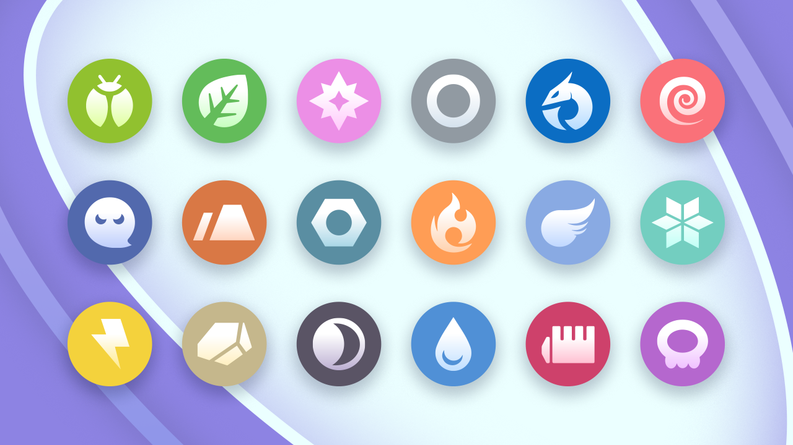
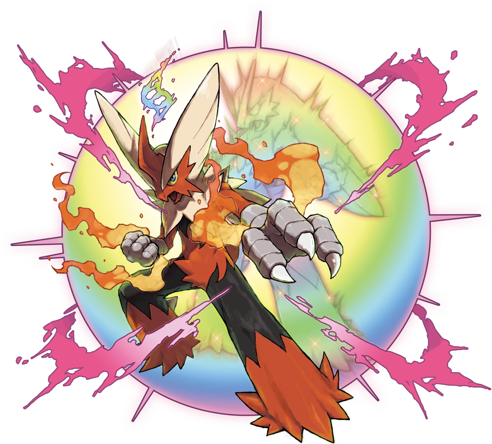
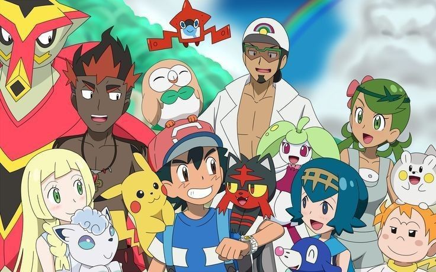

Tipos dos Pokémon
O mundo Pokémon tem tipos que são extremamente relevantes e são a base para tudo, todo pokémon tem pelo menos um tipo, mas é possível que os pokémon tenham até dois tipos, e muitos ganham o segundo tipo em sua linha evolutiva.
Todos os tipos existentes
- Inseto
- Planta
- Fada
- Normal
- Dragão
- Psíquico
- Fantasma
- Terrestre
- Metal
- Fogo
- Voador
- Gelo
- Elétrico
- Pedra
- Sombrio
- Água
- Lutador
- Venenoso

Diferentes formas:
Mecânicas: Algumas versões dos jogos são caracterizadas por terem mecânicas muito inovadoras, como as mega evoluções, que foram um dos maiores impactos na comunidade alguns exemplos dessas mecânicas são:
- Mega evoluções (Pokémon X & Y)
- Z-Move (Pokémon Sun & Moon)
- Dynamax & Gigantamax (Pokémon Sword & Shield)
- Raid (Pokémon Sword & Shield)
- Terastal (Pokémon Scarlet & Violet)

Sobre a fanbase
Pokémon é uma franquia que, mesmo depois de tantos anos, tem sua fanbase muito estabelecida e com fãs fieis que continuam acompanhando sempre. Além disso, pokémon é atemporal, então além da fanbase já estabelecida a franquia conquista cada vez mais fãs das mais diversas idades, e cada um consegue aproveitar da forma que mais gosta!
